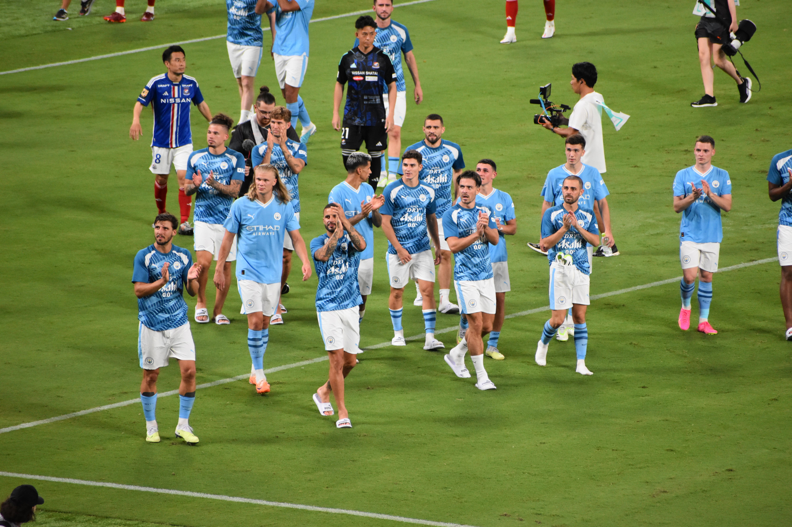

Manchester City

Retour
Récent vainqueur de la Ligue des champions pour la première fois de son histoire, Manchester City est désormais un grand d'Europe. Focus sur l'histoire des Citizens en C1.
Quel est le bilan de Manchester City en Ligue des champions ?
Tenant du titre sur l’édition 2023-2024 et toujours en lice pour prétendre à un deuxième titre d’affilée sur la scène européenne, les Citizens participent actuellement à leur quatorzième campagne en Ligue des champions. Toujours engagé et en bonne voie pour se qualifier en quarts de finale, voici le bilan du club depuis sa première participation en LDC, pendant la saison 1968-1969 :
126 matchs joués
73 victoires
24 nuls
29 défaites
Cela représente un taux de victoires égal à 57,94%. Un bilan favorable et plutôt convaincant pour les hommes de Pep Guardiola.
Lorsque l’on évoque Manchester City, certains matches nous viennent tout de suite en tête. Intéressons-nous donc aux adversaires qu’ils ont joués le plus souvent ainsi que le ratio du club face à ces derniers. Cela prend en compte les doubles et simples confrontations (phases de poule et phases finales) :
Vs Real Madrid : 5 fois (4 victoires - 3 nuls - 3 défaites)
Vs Bayern Munich : 4 fois (4 victoires - 1 nul - 3 défaites)
Vs Paris-Saint-Germain : 3 fois (4 victoires - 1 nul - 1 défaite)
Vs Shakthar Donetsk : 3 fois (4 victoires - 1 nul - 1 défaite)
Vs Olympique Lyonnais : 2 fois (0 victoire - 1 nul - 2 défaites)
Quels sont les meilleurs matches de Manchester City en Ligue des champions ?
Même si le match était peut-être un peu en dessous du niveau affiché pendant la saison, le meilleur match de l’histoire de Manchester City en Ligue des champions est sûrement, dans le cœur des supporters, celui ayant eu lieu le 10 juin 2023 à Istanbul. Celui où pour la première fois de son histoire, Manchester City rentrait au palmarès de la Ligue des champions en battant l’Inter Milan sur le score de 1-0.
Au nombre de buts inscrits, Manchester City compte quelques matches avec des scores fleuves où les buts pleuvaient :
2018-2019 : 6-0 contre le Shakthar Donetsk (phase de poule)
2018-2019 : 7-0 contre Schalke 04 (⅛ de finale retour)
2019-2020 : 5-1 contre l’Atalanta (phase de poule)
2021-2022 : 6-3 contre le RB Leipzig (phase de poule)
2022-2023 : 5-0 contre le FC Copenhague (phase de poule)
2022-2023 : 7-0 contre le RB Leipzig (⅛ de finale retour)
2022-2023 : 4-0 contre le Real Madrid (½ finale retour)
Quels sont les meilleurs buteurs de Manchester City en Ligue des champions ?
Désormais considéré comme un cador européen, Manchester City peut se targuer d’avoir eu, sous ses couleurs, des artificiers de renom pour venir mettre à mal les défenses européennes. Au total, les Citizens ont marqué 266 buts et en ont encaissé 139. Ramené à un ratio par match, les Citizens marquent 2,11 buts par match et en encaissent 1,10.
Si le nom du meilleur buteur du club dans la compétition nous est familier, qu’en est-il des neuf autres ? Découvrez donc le top 10 des meilleurs artificiers des Sky Blues :
Sergio Agüero - 36 buts
Raheem Sterling - 24
Gabriel Jesus - 20
Erling Haaland - 17
Riyad Mahrez - 16
Kevin De Bruyne - 15
Phil Foden - 14
Bernardo Silva - 13
Ilkay Gündogan - 10
David Silva - 8
Si Erling Haaland, qui impressionne et terrifie l’Europe avec sa patte gauche, continue sur sa lancée et qu’il n’a pas des envies d’ailleurs, il pourrait bien marcher sur les traces d’un des meilleurs amis de Lionel Messi pour devenir le meilleur buteur des Citizens en Ligue des champions. Mais voilà, un grand buteur attire toujours l’œil du plus grand club du monde et, un jour peut-être, le grand norvégien pourrait découvrir la capitale espagnole où il formerait un duo dévastateur en compagnie d’un certain Kylian Mbappé.